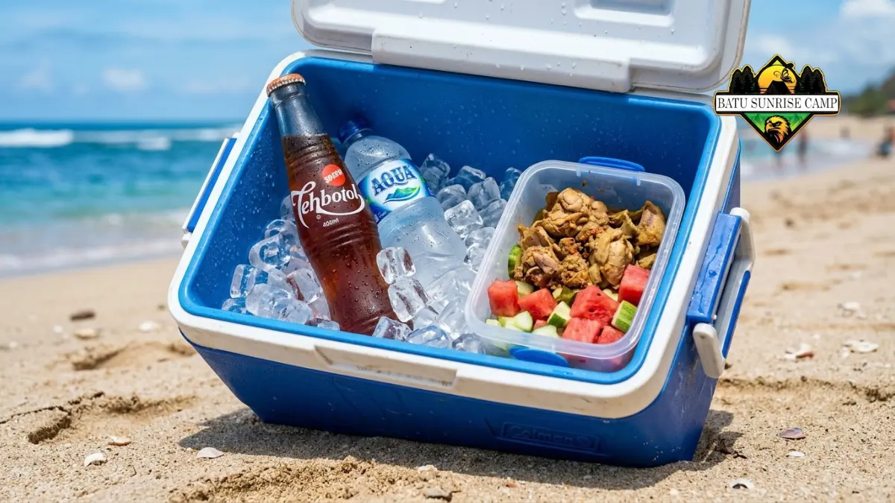

Makanan praktis camping pantai adalah bekal yang mudah dibawa, tahan terhadap suhu panas, dan tidak memerlukan proses masak rumit, seperti roti isi, buah potong, camilan kering, dan makanan kaleng siap saji.
Camping di pantai memiliki tantangan berbeda dibanding camping di pegunungan, terutama karena suhu udara yang cenderung panas dan kelembapan tinggi akibat udara laut. Kondisi ini membuat pemilihan makanan menjadi faktor penting agar bekal tetap aman dikonsumsi dan tidak cepat rusak.
Perencanaan menu yang matang sejak awal juga membantu menghindari pemborosan bahan makanan dan memastikan setiap peserta mendapat asupan energi yang cukup selama aktivitas di pantai berlangsung.
Apa Saja Jenis Makanan Praktis untuk Camping Pantai?
Jenis makanan praktis untuk camping pantai mencakup makanan kering, makanan kaleng, roti isi, dan buah yang tahan terhadap suhu ruang dalam waktu tertentu.
Beberapa kategori yang umum digunakan:
- Makanan kering dan camilan: kacang-kacangan, keripik, biskuit, granola bar
- Roti dan sandwich: roti isi telur, selai, atau daging olahan yang tahan beberapa jam
- Makanan kaleng siap makan: kornet, sarden, sosis kalengan
- Buah tahan panas: apel, jeruk, pisang yang belum terlalu matang
- Mie instan atau makanan instan ringan yang hanya butuh air panas
Pemilihan menu sebaiknya disesuaikan dengan durasi camping dan ketersediaan peralatan memasak di lokasi. Setiap kategori memiliki peran berbeda dalam susunan menu harian, misalnya makanan kering lebih cocok sebagai camilan pengganjal di sela aktivitas, sementara makanan kaleng dan roti isi lebih tepat dijadikan menu utama saat makan siang atau malam.
Untuk pilihan bekal yang sama sekali tidak memerlukan proses masak, lihat pembahasan lengkap di resep makanan tanpa masak untuk camping pantai.
Bagaimana Cara Menyimpan Makanan Agar Tahan Lama di Pantai?
Cara menyimpan makanan agar tahan lama di pantai adalah dengan menggunakan cooler box berisi ice pack, menghindari paparan sinar matahari langsung, dan memisahkan makanan mentah dari makanan siap saji.
Beberapa langkah praktis penyimpanan:
- Gunakan cooler box berkualitas dengan insulasi baik
- Tambahkan ice pack atau es batu dalam kantong tertutup
- Simpan cooler box di tempat teduh, jauh dari sinar matahari langsung
- Pisahkan makanan basah dan kering menggunakan wadah kedap udara
- Konsumsi makanan yang lebih mudah basi lebih dulu
Suhu udara di area pantai umumnya lebih tinggi dibanding daerah pegunungan, sehingga daya tahan makanan cenderung lebih pendek jika tidak disimpan dengan tepat. Selain suhu, faktor kelembapan dari udara laut juga dapat mempercepat pertumbuhan bakteri pada makanan yang tidak disimpan dengan benar, sehingga pemilihan wadah dan lokasi penyimpanan menjadi sama pentingnya dengan pemilihan jenis makanan itu sendiri.

Penggunaan cooler box sangat penting untuk menjaga kualitas makanan selama camping di pantai.
Mengapa Menu Tanpa Masak Lebih Disarankan?
Menu tanpa masak lebih disarankan untuk camping pantai karena menghemat waktu, mengurangi risiko api terbuka di area berangin, dan tidak memerlukan banyak peralatan tambahan.
Angin pantai yang cukup kencang sering kali membuat penggunaan kompor portable menjadi kurang efisien dan berisiko. Karena itu, menu yang sudah matang atau hanya membutuhkan proses sederhana seperti menyeduh air panas menjadi pilihan yang lebih aman dan praktis. Bagi kelompok yang membawa banyak peserta, menu tanpa masak juga membantu mempercepat waktu penyajian karena tidak perlu bergiliran menggunakan alat masak.
Apa Kesalahan Umum Saat Membawa Bekal ke Pantai?
Kesalahan umum saat membawa bekal ke pantai antara lain membawa makanan berkuah yang mudah tumpah, tidak menggunakan wadah tertutup rapat, dan membiarkan makanan terkena sinar matahari langsung dalam waktu lama.
Kesalahan lain yang sering terjadi:
- Membawa makanan yang mudah basi tanpa pendingin
- Tidak membawa cadangan air minum yang cukup
- Mengabaikan kebersihan tangan sebelum makan di area berpasir
- Tidak memisahkan sampah makanan dengan baik
- Membawa terlalu banyak variasi menu sehingga sulit dikelola dan berisiko terbuang
Faktor Apa Saja yang Perlu Dipertimbangkan Saat Memilih Menu?
Faktor yang perlu dipertimbangkan saat memilih menu camping pantai meliputi durasi perjalanan, jumlah peserta, ketersediaan alat masak, serta kondisi cuaca dan suhu di lokasi.
Semakin lama durasi camping, semakin penting untuk memilih kombinasi makanan tahan lama dan makanan segar yang dikonsumsi di awal perjalanan. Jumlah peserta juga memengaruhi cara pengemasan, karena kelompok besar umumnya lebih efisien menggunakan porsi terbagi dalam wadah individu dibanding satu wadah besar yang dibagikan bersama.
Bagaimana Perbedaan Menu untuk Camping Sehari dan Camping Beberapa Hari?
Perbedaan menu untuk camping sehari dan camping beberapa hari terletak pada proporsi makanan segar dan makanan tahan lama yang dibawa, di mana camping singkat dapat mengandalkan lebih banyak makanan segar.
Untuk camping satu hari, makanan segar seperti sandwich, buah potong, dan salad dapat menjadi menu utama karena risiko basi masih rendah dalam rentang waktu singkat. Sebaliknya, untuk camping dua hingga tiga hari, proporsi makanan kering, kaleng, dan instan sebaiknya lebih dominan, sementara makanan segar hanya dikonsumsi pada hari pertama sebelum kualitasnya menurun. Perencanaan seperti ini membantu mengurangi risiko keracunan makanan sekaligus menjaga efisiensi ruang penyimpanan di cooler box.
Tips Menyiapkan Bekal Camping Pantai Secara Efisien
- Siapkan daftar menu berdasarkan hari agar tidak berlebihan membawa bahan
- Gunakan wadah kedap udara berukuran kecil untuk porsi sekali makan
- Bawa camilan tinggi energi untuk aktivitas fisik seperti berenang atau trekking pantai
- Sertakan air minum dalam jumlah cukup, karena aktivitas di pantai meningkatkan risiko dehidrasi
- Susun bahan makanan berdasarkan urutan konsumsi agar lebih mudah diambil dari cooler box
Checklist Persiapan Bekal Sebelum Berangkat ke Pantai
Sebelum berangkat, ada baiknya menyusun checklist sederhana agar tidak ada bahan penting yang tertinggal. Beberapa poin yang perlu dipastikan meliputi jumlah porsi makanan sesuai peserta, ketersediaan cooler box dan ice pack yang cukup, wadah kedap udara dalam berbagai ukuran, serta cadangan air minum dan camilan darurat.
Checklist ini membantu memastikan seluruh kebutuhan makanan sudah tercakup sebelum perjalanan dimulai, sehingga proses penyiapan bekal di lokasi menjadi lebih singkat dan terorganisir.
Kesimpulan
Makanan praktis camping pantai sebaiknya dipilih berdasarkan daya tahan terhadap suhu panas, kemudahan penyimpanan, dan minim risiko tumpah atau basi.
Kombinasi makanan kering, kaleng, dan bekal siap makan menjadi solusi paling efisien untuk pengalaman camping pantai yang nyaman di tahun 2026. Perencanaan yang matang, mulai dari pemilihan menu berdasarkan durasi camping hingga penyusunan checklist sebelum berangkat, akan sangat membantu memastikan seluruh peserta mendapat asupan makanan yang cukup dan aman selama berada di pantai.